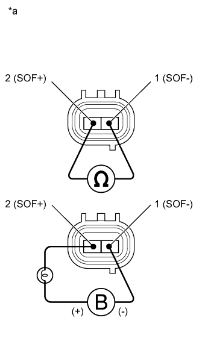

DTC C1531 Неисправность ЭБУ |
| Код DTC | Условие обнаружения DTC | Неисправный участок |
| C1531 | Короткое замыкание или обрыв в цепи электромагнитного клапана |
|
| 1.СНИМИТЕ ПОКАЗАНИЯ ПОРТАТИВНОГО ДИАГНОСТИЧЕСКОГО ПРИБОРА (ТОК ЭЛЕКТРОМАГНИТНОГО КЛАПАНА) |
Выключите зажигание.
Подсоедините портативный диагностический прибор к DLC3.
Установите замок зажигания в положение ON (ВКЛ).
Включите портативный диагностический прибор.
Войдите в следующие меню: Chassis / PPS / Data List.
| Информация на дисплее прибора | Измеряемая величина / диапазон измерения | Нормальное состояние | Замечание по диагностике |
| Solenoid Current | Ток электромагнитного клапана / Мин.: 0 мА Макс.: 1000 мА | 200 - 950 мА | Двигатель работает, рулевое колесо поворачивается. |
|
| ||||
| OK | ||
| ||
| 2.ПРОВЕРЬТЕ ЖГУТ ПРОВОДОВ И РАЗЪЕМ (ЭБУ РУЛЕВОГО УПРАВЛЕНИЯ С УСИЛИТЕЛЕМ – ЭЛЕКТРОМАГНИТНЫЙ КЛАПАН РУЛЕВОГО УПРАВЛЕНИЯ С УСИЛИТЕЛЕМ) |
Отсоедините разъемы ЭБУ рулевого управления с усилителем и электромагнитного клапана рулевого управления с усилителем.
Измерьте сопротивление в соответствии со значениями, приведенными в таблице ниже.
| Контакты для подключения диагностического прибора | Условие | Заданные условия |
| G46-7 (SOF+) - C38-2 (SOF+) | Всегда | Менее 1 Ом |
| G46-8 (SOF-) - C38-1 (SOF-) | ||
| G46-7 (SOF+) - масса | Всегда | 10 кОм или более |
| G46-8 (SOF-) - масса |
|
| ||||
| OK | |
| 3.ПРОВЕРЬТЕ ЭЛЕКТРОМАГНИТНЫЙ КЛАПАН РУЛЕВОГО УПРАВЛЕНИЯ С УСИЛИТЕЛЕМ В СБОРЕ |
|  |
Отсоедините разъем электромагнитного клапана рулевого управления с усилителем.
Измерьте сопротивление в соответствии со значениями, приведенными в таблице ниже.
| Контакты для подключения диагностического прибора | Условие | Заданные условия |
| 1 (SOF-) - 2 (SOF+) | 20°C (68°F) | 6,7 - 7,3 Ом |
Подсоедините положительный (+) вывод аккумуляторной батареи с лампой 21 Вт к контакту 2 (SOF+), а отрицательный (-) вывод – к контакту 1 разъема электромагнитного клапана. Затем убедитесь в том, что клапан приводится в движение, издавая характерный для этого звук.
| Результат | Следующий шаг |
| OK | А |
| NG (для моделей с 1GR-FE) | B |
| NG (для моделей с 1KD-FTV) | C |
| NG (для моделей с 2TR-FE) | D |
| *a | Устройство с отсоединенным жгутом проводов (электромагнитный клапан рулевого управления с усилителем) |
|
| ||||
|
| ||||
|
| ||||
| А | ||
| ||